AI ile
etkili sunum.
Eğitimde kullandığımız kaynaklar,
tek bir yerde.
Eğitim kaynakları
3 KAYNAK- PDF SUNUM
Sunum dosyası
Getir’in stratejik analizi: anlık teslimattan SuperApp’e yolculuk.
Kaynağı aç - GOOGLE DOKÜMANLAR
Rapor Ön Hazırlık ve Sunum Metni
Tasarım dili, marka evrimi ve kullanıcı deneyimi üzerine çalışma.
Kaynağı aç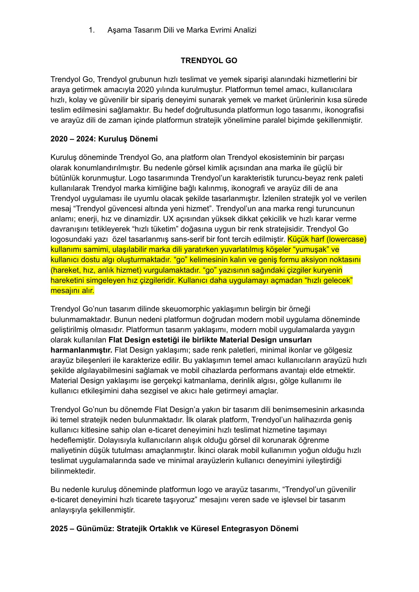
- PDF RAPOR
Proje dosyası
Getir’in bilişim sistemleri, teknoloji altyapısı ve stratejisi.
Kaynağı aç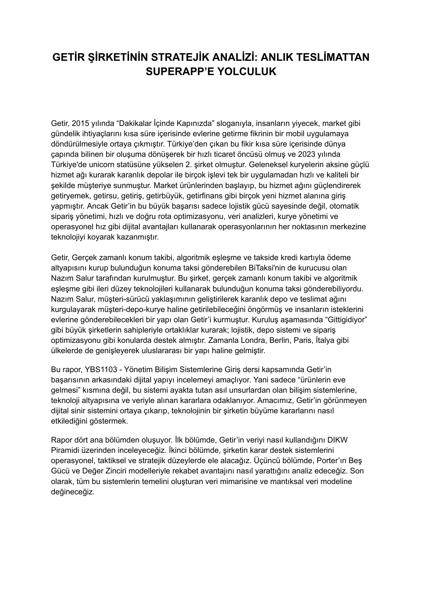
Kaynaklar yeni sekmede açılır. Görüntülemek için oturum açmanız gerekmez.
Bir çizimden sunum görseline
ÖNCE / SONRAOrijinal taslak ve yapay zekâ ile oluşturulan iki sunum görseli. Ayrıntıları görmek için görsellere dokunun.
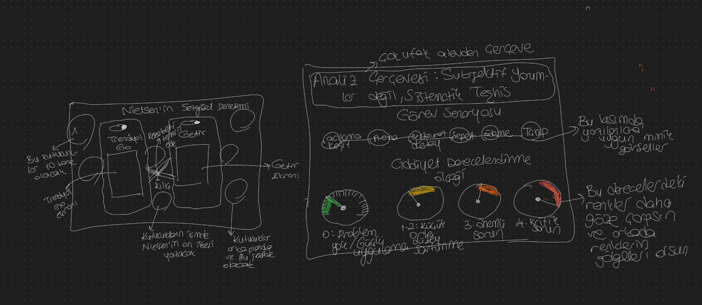
Orijinal çizim
Görseli aç ↗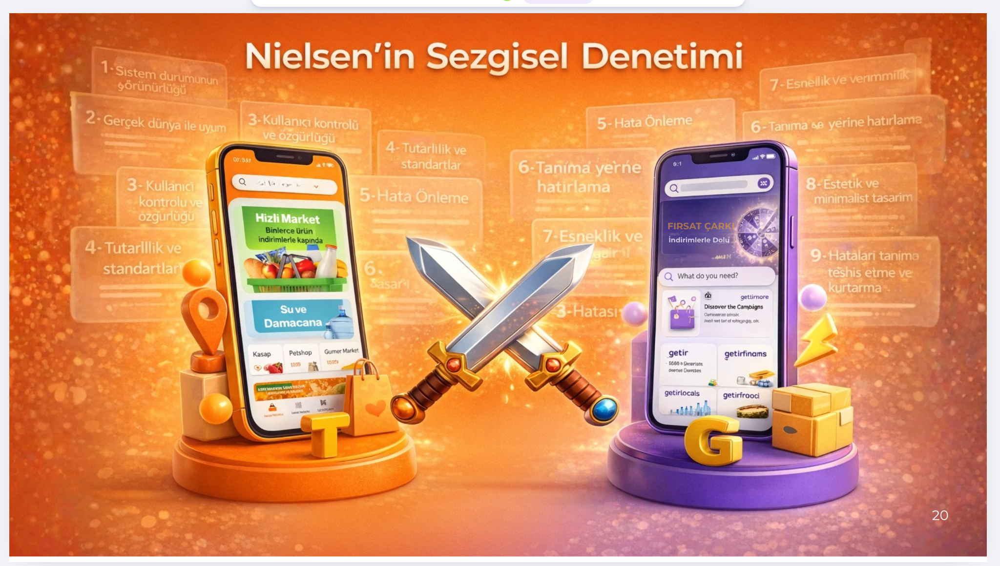
Nielsen’in sezgisel denetimi
Görseli aç ↗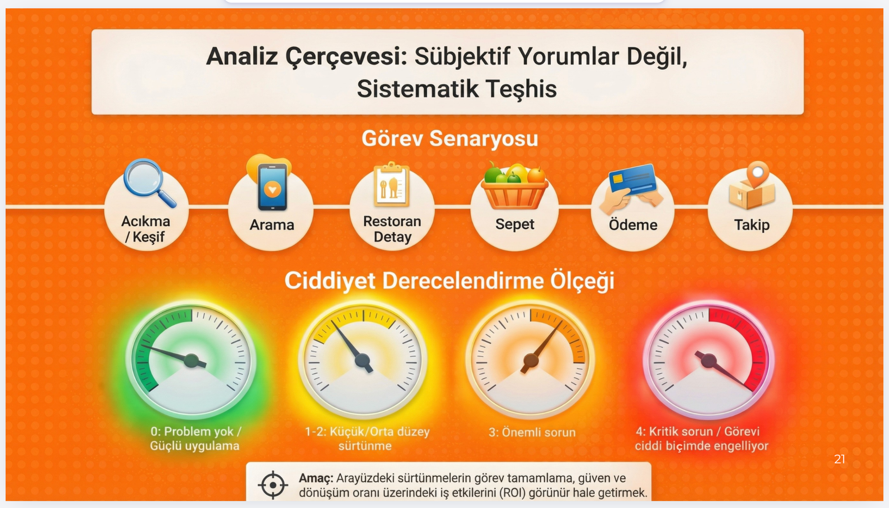
Analiz çerçevesi
Görseli aç ↗Tasarım ilkeleri
Tutarlılık, hiyerarşi, hizalama, nefes boşluğu, renk ve tipografi üzerine karşılaştırmalı örnekler.
Tasarım ilkelerini görüntüle7 eğitim görseli
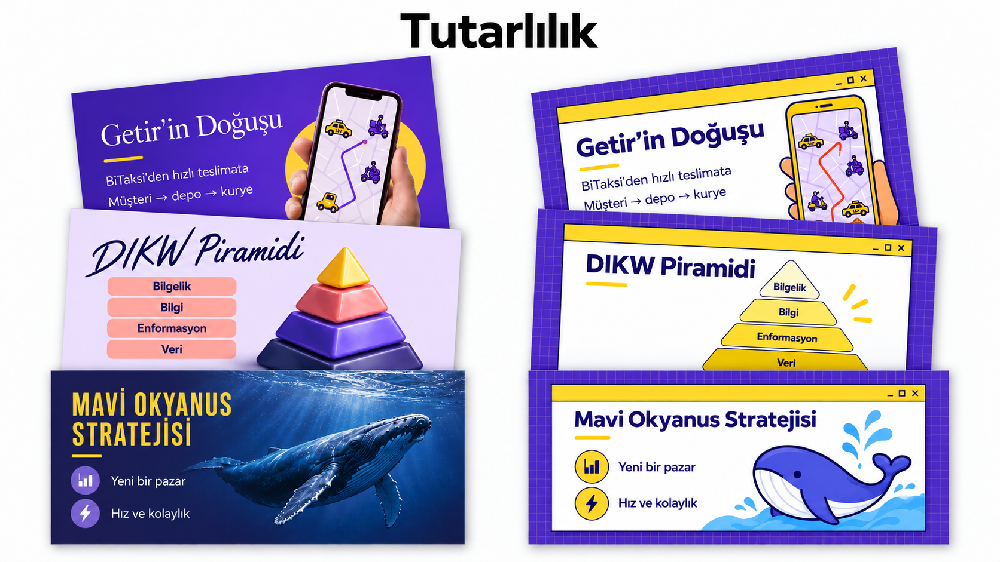
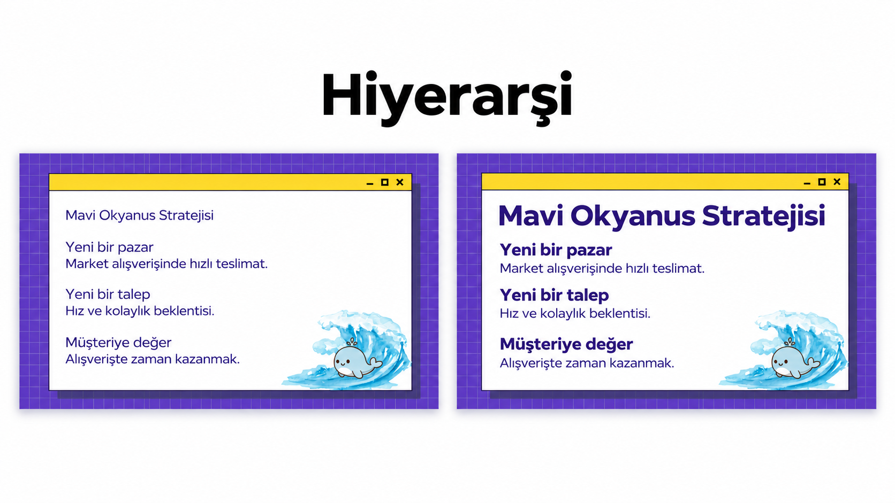
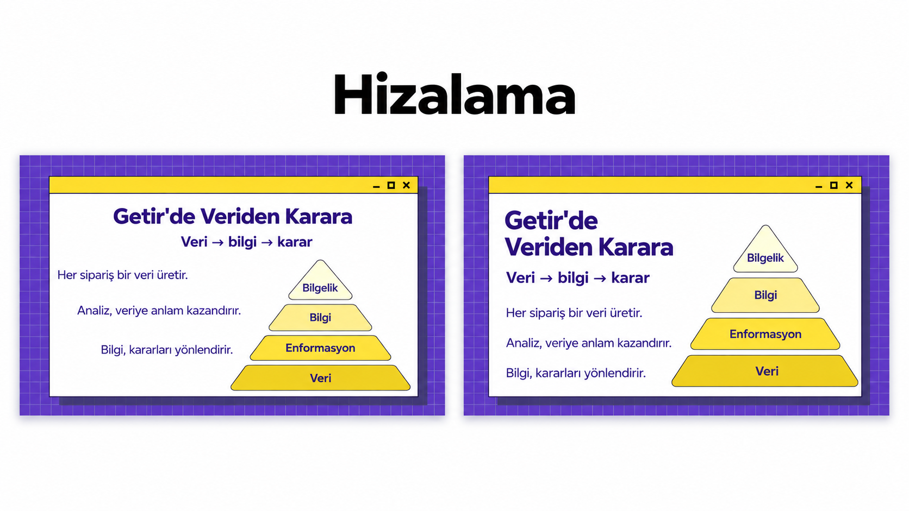
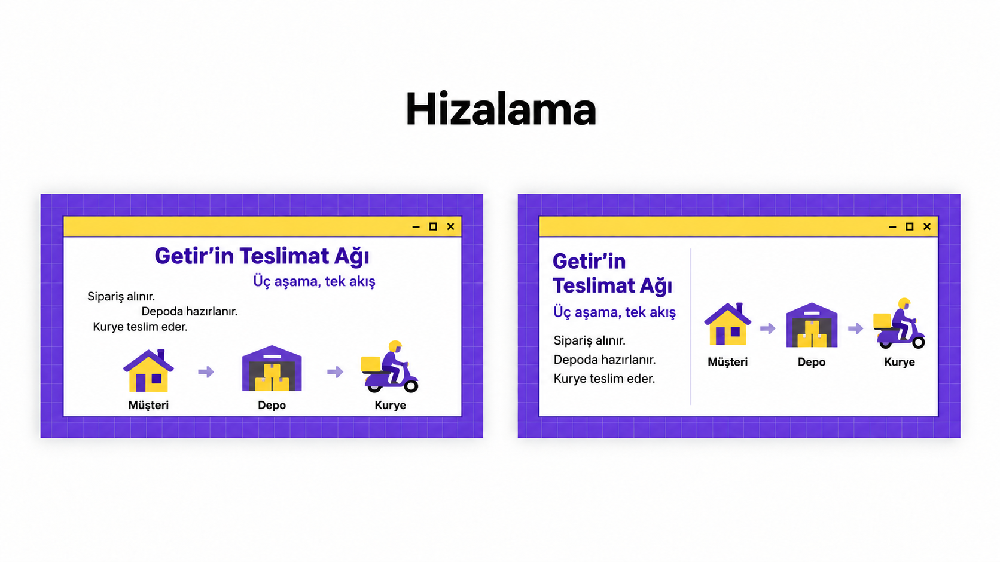
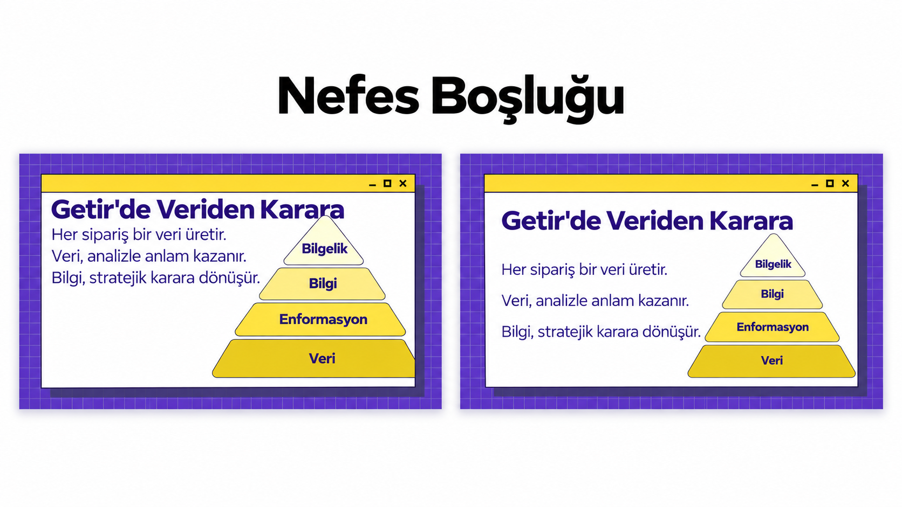
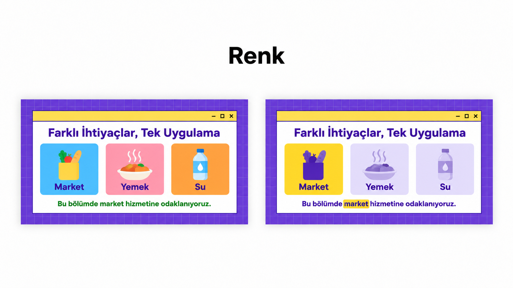
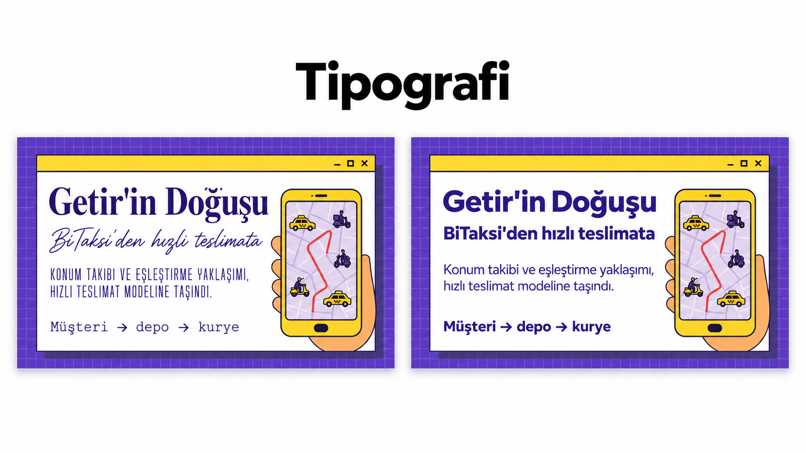